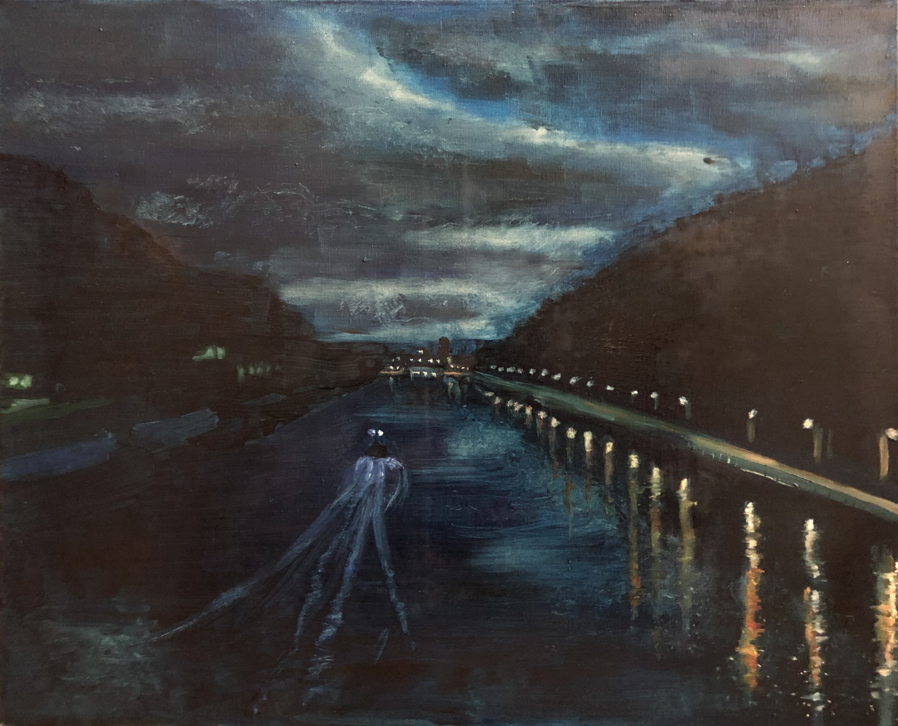

Accueil
Artistique
L'avenir
L'histoire
Contact
NL
EN
Dansvoorstelling 'Birds' van Seppe Baeyens / Wim Vandekeybus
Beluister de sound walk van Alex Deforce! die je kan beluisteren terwijl je wandelt van de Pierre Marchantbrug naar de Paepsem brug en terug.
Schilderij van Olivier Slosse

Masterstudio project Universiteit Gent, oktober - december 2021
© 2023 Surlepont Brussels Anderlecht | designed by Surlepont3